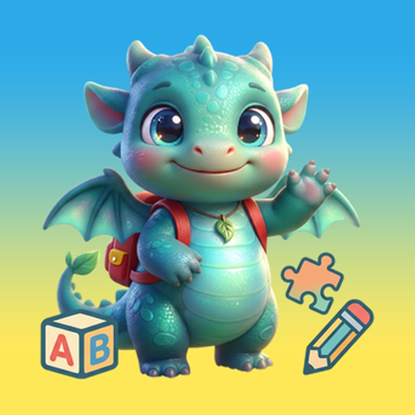
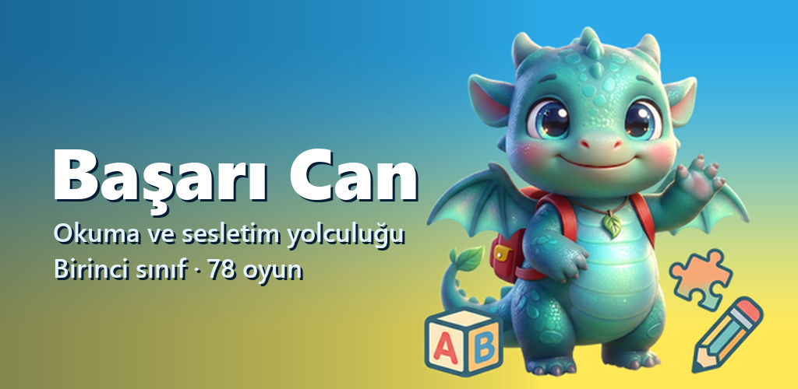

Başarı Can
Birinci sınıf okuma ve sesletim yolculuğu

Başarı Can, ilkokul birinci sınıf düzeyinde okuma çalışması için hazırlanmış bir uygulamadır. Çocuk harfleri tanımaktan başlayıp heceye, kelimeye ve cümleye ilerler; her adımda sesli okur ve uygulama okuduğunu dinler.
Neler var
Okuma yolculuğu
Çalışmalar bir harita üzerinde ilerler. Dersler tamamlandıkça yeni duraklar ve oyunlar açılır.
Sesli okuma değerlendirmesi
Türkçe heceler için hazırlanmış bir ses modeli çocuğun okuduğunu dinler ve geri bildirim verir.
78 oyun
Balık tutma, hece basamakları, kelime bahçesi, hikâye tiyatrosu. Oyunlar ilgili dersler bitince açılır.
Kitaplık
Resimli kısa hikâyeler, dünya klasiklerinden uyarlamalar, kelime kartları, tekerlemeler.
Veliler için
- Reklam yok, uygulama içi satın alma yok.
- Dersler, okuma ve ses değerlendirmesi çevrimdışı çalışır.
- Profil bilgisi ve ilerleme kayıtları yalnızca cihazda tutulur.
- Ses kayıtlarının araştırma amacıyla paylaşılması isteğe bağlıdır ve veli onayına bağlıdır.
- İlerleme ekranında çocuğun hangi sesleri çalıştığı, doğru ve yanlış sayıları görünür.
İletişim
- Geliştirici
- Özkan Kara
- E-posta
- basarican.destek@gmail.com
- Gizlilik
- Gizlilik politikası
- Hesap silme
- Hesap silme talebi